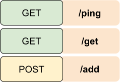

Weather station - Server and database
Table of Contents
Weather station - This article is part of a series.
As the measuring station is wired up, can connect to the local network via Wi-Fi and obtain weather data, it’s time to process and store the data within our server. This article will focus on how to add the data from the measuring station to the server and store the weather information into the database.
The full code example will be given at the end of the post.
Technology decisions #
There are numerous possibilities on how to build the server and database, so I ended up with the following:
- Golang for the server - simple, performance-oriented, highly concurrent, built-in network functionalities, lot of community support etc.
- MongoDB for the database - scalable, document based, NoSQL database which is perfect for handling high traffic and unstructured data (i.e., sensor data)
Another option that I was considering for the database was Redis as it’s an in-memory data structured database which is perfect for IoT based projects, but this is for another time.
System overview #
For a better understanding on how the system components are related to each other, the picture below shows a simplified architectural overview.

The server and database are located on a dedicated host which, in my case, is an old laptop with an installed Ubuntu Server 22.04.2 OS, but any type of hardware that supports any Unix or Windows like operating system will do the trick (i.e., Raspberry Pi).
Both, the measuring station and server PC, are connected to the local network. In order to make HTTP requests from the measuring station to the server, the IP address of the server PC needs to be obtained which is vital in order to know where the data should be sent. More about on how to setup the dedicated host and database will be available in the follow-up post of this series.
The paths we choose… #
To continue in the spirit of simplicity, there will be three routes (endpoints) in the server which are the following: 
Each endpoint has appropriately assigned handlers which do the following:
/ping- Checks whether the server is online and functional/get- Retrieves all the weather data located in the database/add- Adds the weather data into the database
If this looks a bit fuzzy to you, here is a refresher about HTTP requests methods.
In order to implement the above-mentioned endpoints, there are multiple options in Golang to choose from - the one I went with was the router library Chi as it has a lot of handy networking and router features. Initially, I wanted to go with Gorilla Mux as I have worked with it in the past, but the development stopped so it will be ditched for this project.
Anyways, the following code snippet contains the setup process of the router router and it’s functionalities which are handling the requests.
package web
import (
"github.com/go-chi/chi/v5"
"net/http"
"server/core"
)
type Routes struct {
// Necessary dependencies of the app (i.e., logger, session manager, etc.)
App *core.Application
// Handler functions for each endpoint
Handlers *Handler
}
// Acts as a constructor for our router functionality
func NewRouter(app *core.Application) *Routes {
// Create a "Routes" object on the heap
routes := &Routes{}
// Initialize the needed dependencies
routes.App = app
// Contains all handler functionalities for our server
routes.Handlers = NewHandler(app)
return routes
}
func (r *Routes) HandleRequests() *chi.Mux {
// Instantiate a new router
router := chi.NewRouter()
//GET endpoints
router.Get("/ping", r.Handlers.Ping)
router.Get("/get", r.Handlers.Get)
// POST endpoints
router.Post("/add", r.Handlers.Add)
return router
}
Also, I plan to implement an additional endpoint which will fetch data between specific dates, but more on that in the future.
Database schema and handlers #
The database schema looks like the following:
datetimetemperaturehumidity
This schema is also reflected in the WeatherData data structure in Go which is used for storing request and creating response data.
// WeatherData Contains all necessary data in order to retrieve or store weather data
type WeatherData struct {
Datetime primitive.DateTime `json:"datetime" bson:"datetime"`
Temperature string `json:"temperature" bson:"temperature"`
Humidity string `json:"humidity" bson:"humidity"`
}
FYI, the additional tags added besides the structure data members are called struct tags.
As we have a simple API interface for now, there is no need to implement all
CRUD functionalities for the MongoDB database - only Create and Read. To achieve this, there are dedicated libraries in Golang which is the
Mongo Driver package and is a perfect fit for our case. To get a feeling how this looks like, the follow-up code snippet shows the Create functionality:
// Database Contains all needed functionality and dependencies in order to execute database CRUD operations
type Database struct {
app *core.Application
WeatherData *mongo.Collection
}
func (db *Database) Create(weatherData *WeatherData) error {
weatherData.Datetime = primitive.NewDateTimeFromTime(time.Now())
_, err := db.WeatherData.InsertOne(context.TODO(), weatherData)
if err != nil {
return err
}
return nil
}
The create functionality takes in a WeatherData type of data which is received from the measurement station with accompanying weather data measurements. The Temperature and Humidity (of the passed data) were previously populated in the handler function called
Add with the received data. Additionally, the Datetime field is created and assigned inside the above shown database function as MongoDB has some special functions for creating datetime stamps.
Working with the server #
To better grasp the above-described concepts and ideas, let’s have a look of an example workflow in which the weather data is sent to the server.

After the measurement is conducted, the ESP01 creates an HTTP POST request in which the measurements are added in JSON form to the POST request payload. The destination URL represents the server endpoint, which is composed of the target address (IP address of the dedicated host in the local network), port number over which the server is communicating, and the actual endpoint name which, in our case, adds the data to the database.
To check whether the API and handler functions are working as expected, there are several options to test it. The two that I used during this project:
- curl - command-line based data transferring tool with URLs, can be used both on Linux and Windows
- Postman - Popular GUI API platform for building and using APIs
One example of adding mocked data into the database with curl, and testing it therefore, looks like the following:
curl -X POST -H "Content-Type: application/json" -d '{"temperature":"21", "humidity":"36"}' http://192.168.1.2:3500/add
After the request is sent, the log output of the server looks like the following:

Conclusion #
In this post we covered a lot of topics - from the overall design, how the server code looks like all to how to make HTTP requests. In the next post I will write about how to set up the database, dockerize the whole server and how to run it on a dedicated host.
Full server example can be found here.
Stay tuned and thanks for reading!